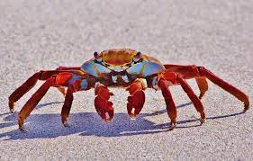

Crabs are decapod crustaceans of the infraorder Brachyura, which typically have a very short projecting "tail"
(abdomen) (Greek: βραχύς, romanized: brachys = short,[2] οὐρά / οura = tail[3]), usually hidden entirely under the
thorax. They live in all the world's oceans, in fresh water, and on land, are generally covered with a thick
exoskeleton, and have a single pair of pincers. They first appeared during the Jurassic Period.